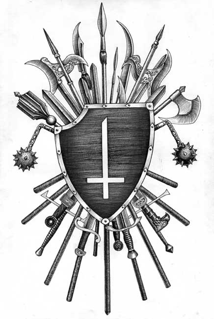

CONTRA DEI
Мы не знаем, в чьи руки попал этот журнал. Мы хотим представлять себе, какие выводы сделал тот, кто его прочел. Мы готовы обозначить свои выводы.
Принцип CONTRA DEI (быть против бога) – есть причина и угроза. Он существует как идея, отражающая один из Принципов Зла. Он существует вне предубеждений, как и само Зло, которое есть вне мифов и домыслов, и всегда выше лжи.
Он живет в тех, кто не только принимает Идеи Зла в их естественном совершенстве, но живет ими и развивает их, используя свои возможности и способности открывать их другим и утверждать их. Он естественен для тех, чье каждое слово о Дьяволе сказано достойно, честно, свободно и со всей ответственностью. Так же естественен и наш выбор тех, чьи слова запечатлены на страницах CONTRA DEI. Их действительно немного. Их оказалось гораздо меньше, чем хотелось нам. Но мы не разочарованы в своем выборе. Он показателен. Более того, все те, кто говорил здесь о своей причастности к войне за Дьявола против бога, реализуют себя в разных сферах, где также проявляется и утверждается Дьявольское против божественного.
Сейчас можно предвидеть некоторые вопросы как к самому изданию, так и к тем, кто осознанно выступил в нем за Дьявола. Пусть одним из необходимых будет вопрос: «Где же раньше были все эти люди?» Они несомненно были…были там, где остаются и сейчас, остаются теми, кто они есть. Они лишь открылись именно в то время, когда при их же соучастии возрождаются взаимоотношения человека и Дьявола, и утверждается Его власть в умах, сердцах и душах тех, кто волен посвятить Ему свои жизни.
У нас есть не много, но достаточно причин говорить об этом так смело. В их числе деяния противников бога, провоцирующие качественные (именно качественные, а не количественные) изменения в мироздании, о которых можно судить по ярко выраженному конфликту там, где бывает упомянуто имя Дьявола. Они очевидны для тех, кто способен отличить правду ото лжи, следуя к Дьяволу естественным путем, пересекая распутья, отвергая иные возможности и необходимости.
Мы знаем свое место и предназначение в Войне и противостоянии, и будем продолжать использовать все свои возможности. У нас есть на это причина – причина жизни одного и угроза жизни другого.
CONTRA DEI